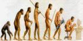

Загадки истории, Неизвестная история человечества

Человек разумный (лат. Homo sapiens) (мн. ч. — люди) — вид приматов, представитель группы гоминид рода человек, способный к речи, абстрактному мышлению, прямохождению и изготовлению орудий труда и их использованию. Существенными навыками является приготовление пищи при помощи термической обработки и использование одежды.
В настоящее время официальная научная концепция дает примерно такую хронологию появления нашей цивилизации и человечества :
• Каменные инструменты
. Наиболее древними на сегодняшний день являются инструменты, найденные в ущелье Олдувай (Танзания), их возраст составляет 2,5 млн лет.
• Использование огня
. Гоминиды использовали огонь по крайней мере уже 1,6-1,5 млн лет назад. Некоторые источники считают, что это случилось не более миллиона лет назад.
• Искусство
. Наиболее ранним образцом искусства считается рубило с украшением из окаменевших останков морского ежа. Его возраст оценивается в 200 тыс. лет. Некоторые исследователи считают древнейшим образцом искусства обработанную гальку (возможно, изображение женщины), найденную в Израиле. Возраст этого артефакта составляет 330 тыс. – 230 тыс. лет.
• Язык и речь
. Время появления языка и речи у человека или его предков может быть выведено лишь приблизительно, на основании косвенных археологических или анатомических данных. Развитие областей мозга человека, связанных с регуляцией речи (зона Брока и зона Вернике), прослеживается в черепе Homo habilis, возраст которого составляет 2 млн лет. Исследование же останков Homo sapiens показывает, что около 130 тыс. лет назад люди уже обладали такой анатомией рта и горла, которая необходима для полноценной речи.
В развитии материальной культуры выделяют несколько периодов, которые отличаются друг от друга типом артефактов (прежде всего инструментов) и технологиями их создания. Поэтому различают:
• Олдувайскую культуру – 2,5-1,5 млн лет назад;
• Аббевильскую культуру – 1,5 млн лет – 300 тыс. лет;
• Ашельскую культуру – 300 тыс. – 100 тыс. лет;
• Мустьерскую культуру – 100 тыс. – 30 тыс. лет.
Всемирная история разделяется на следующие периоды:
• Первобытное общество;
• Древний мир (до 476 года – свержение последнего римского императора);
• Средние века (476-1492 – открытие Америки европейцами);
• Новое время (1492-1789 – Великая французская революция);
• Новейшее время (1789-1945 – окончание Второй мировой войны);
• Современная история (после 1945 года).
Ну это уже история настоящего времени, которую ми постоянно созерцаем ...
Давайте несколькими избранными статьями отправимся в увлекательное путешествие в глубь веков и попытаемся понять, каким же образом и когда зародилась наша цивилизация и оно - человечество ...
- | Как древен человек ? .
- | Проблемы с эволюцией.
- | Загадки человеческой эволюции.
- | Замалчиваемые факты о древнем человечестве.
- | Откуда произошла цивилизация ?.
- | Искусство алхимии.
- | Реинкарнация.
- | Почему погибло первое человечество?.|